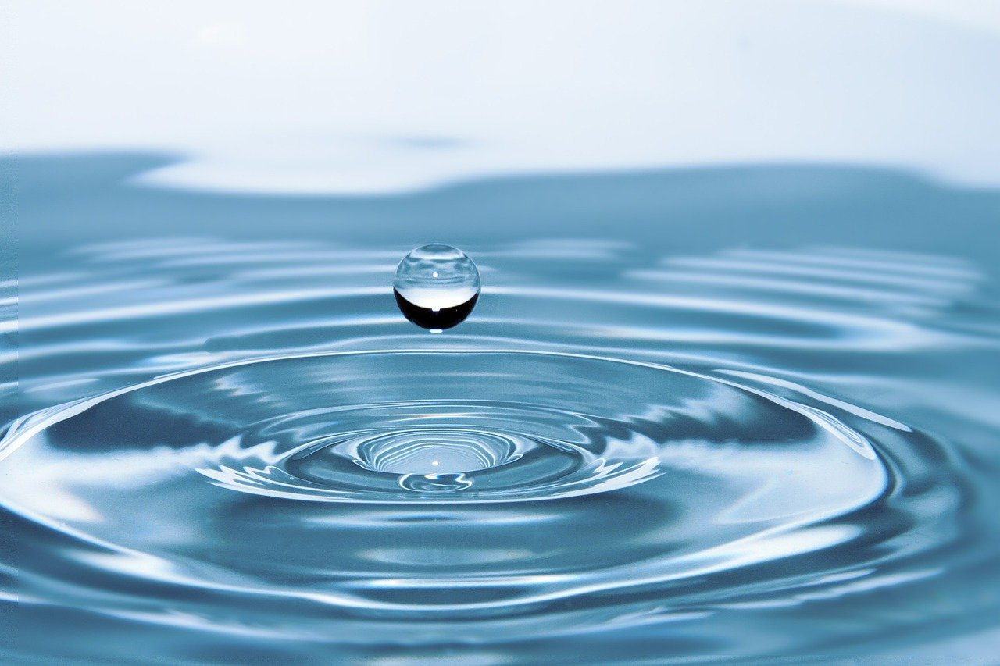

Hello, World! My name is Tatyana!
This is a webpage all about me. My likes, dislikes, hopes, dreams, and favorite things.
Biography
I am a senior in high school who looks forward to learning and becoming the best version of myself. I like to watch television and read. Some of my dislikes include injustice and bugs. I hope that I can be successful one. I dream of having a kitty named Puar. My favorite things include cats, butter, and bread. I also like watching anime.
In my spare time, I enjoy watching anime and discussing my favorite parts with my older brother.
My Favorite Quotation
"Life is like riding a bicycle. To keep your balance you must keep moving." -Albert Einstein
My Favorite Foods
- Pizza
- Tacos
- Ramen
- Cake
- Grilled Cheese
My Top Eight Anime, in order
- Attack On Titan
- My Hero Academia
- Demon Slayer
- Death Note
- The Host Club
- Love is War
- Horimiya
- My Senpai is Annoying
Countries I'd Like to Visit, and What I'd Like To Do There
- Japan
- Cherry Blossoms
- Eat Food
- Watch Anime
- Canada
- Play in Snow
- Eat Poutine
- Talk to People
- England
- Fish and Chips
- Visit Oxford
- Site See Castles
Other Favorite Things
| Favorite Flower | Sunflower | |
|---|---|---|
| Favorite Time Of The Day | Sunset |  |
| Favorite Drink | Water |  |
| Favorite Animal | Turtles | |
| Favorite Song | "Good 4 U" by Olivia Rodrigo |  |
| Favorite Color | Grey |
Contact Information
Email: msbubble@email.com
Phone: 555-555-5555